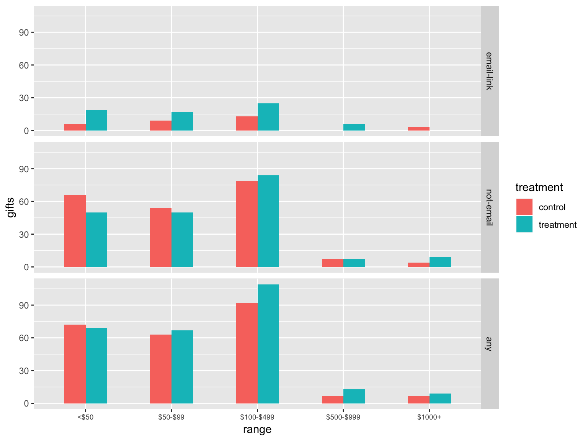
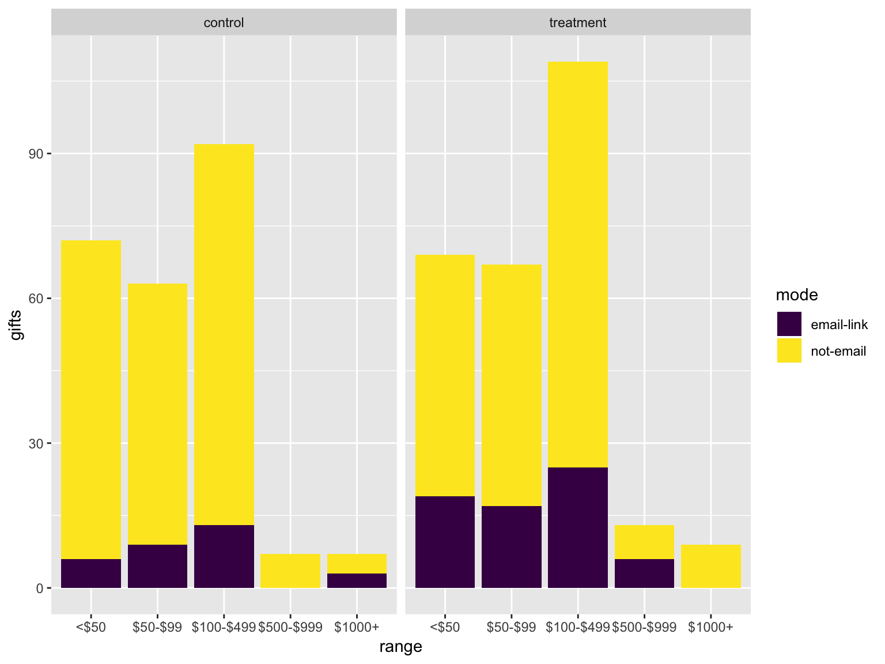
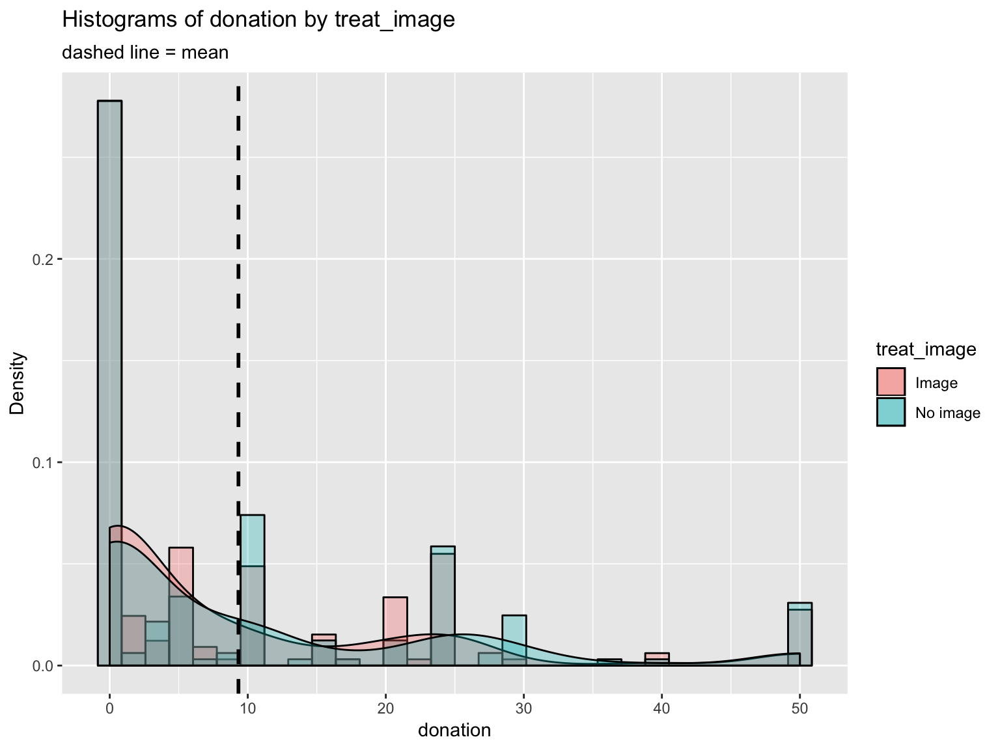
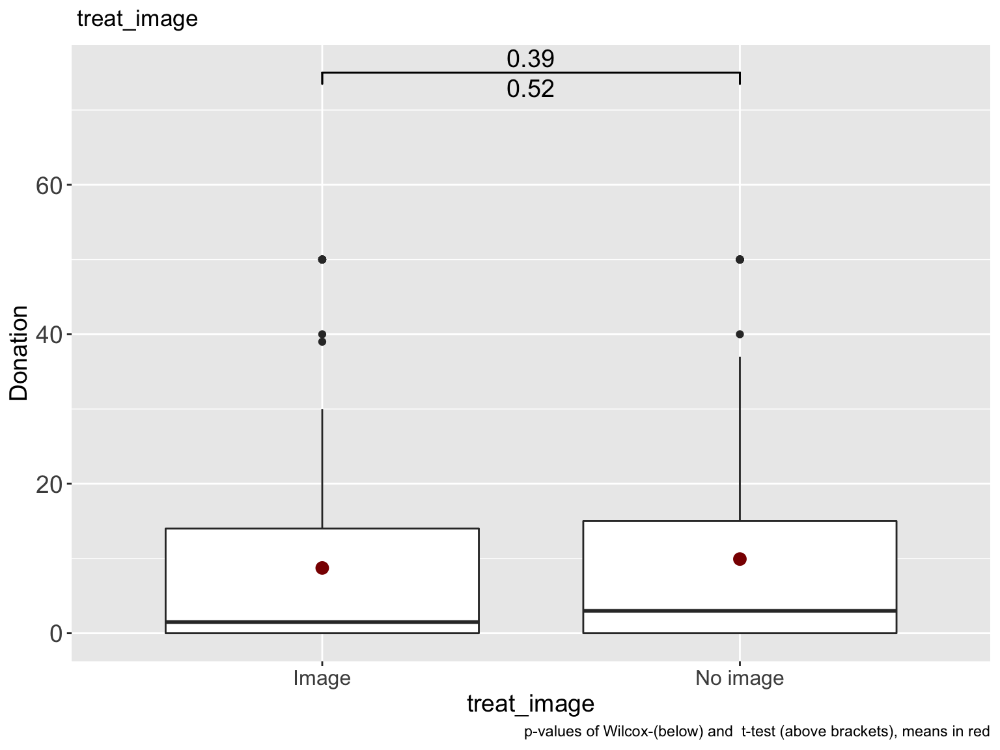
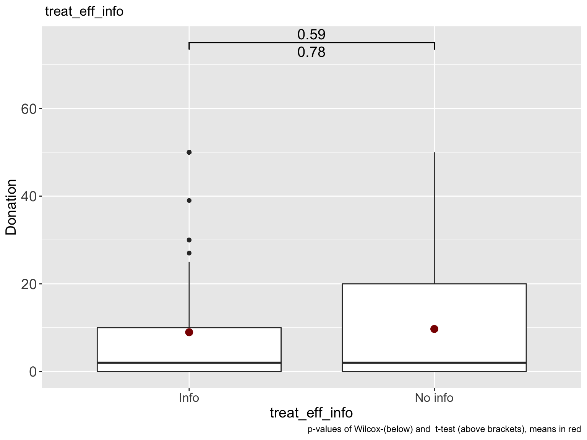
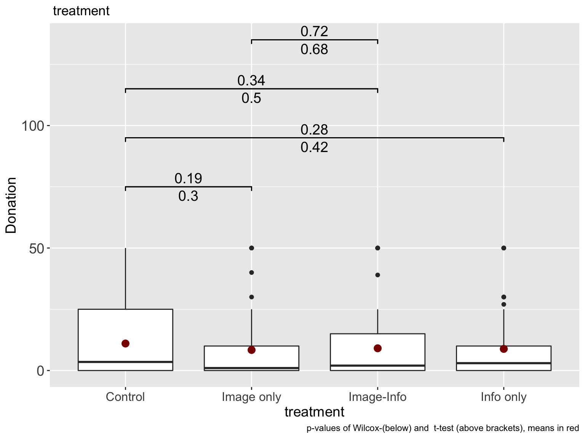
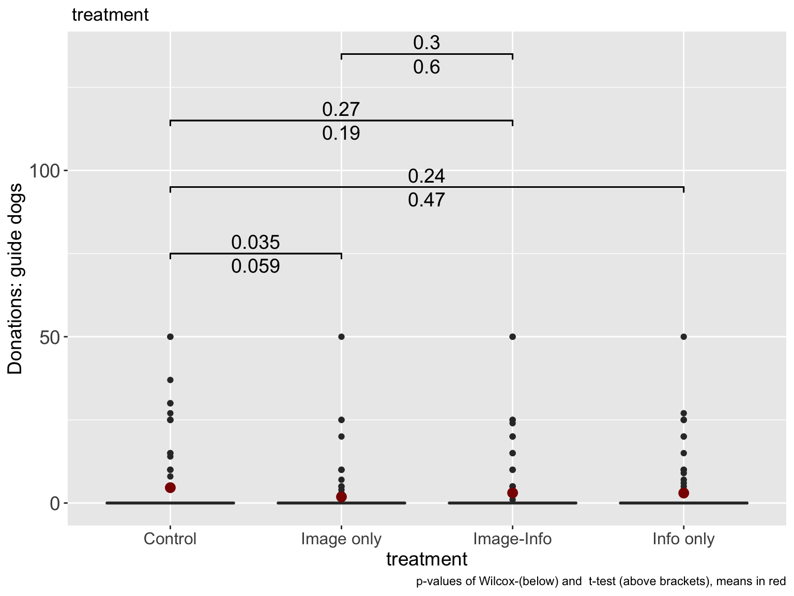
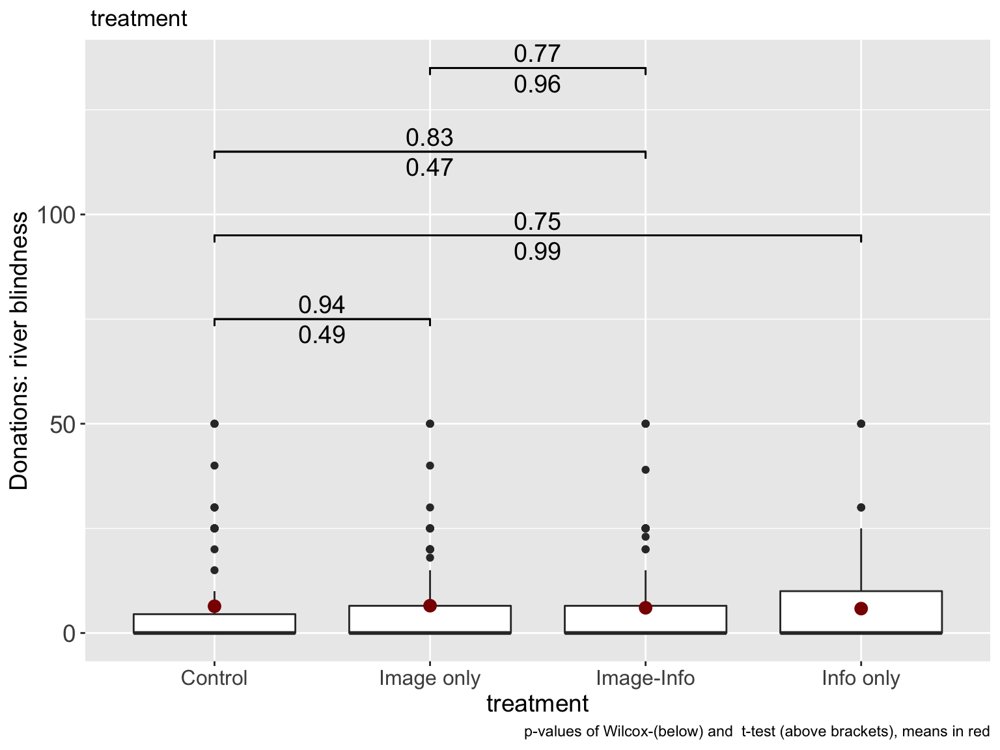

Empathic and Numerate Giving: Donor responses to charity effectiveness and impact information
David Reinstein (Exeter, innovationsinfundraising.org), Robin Bergh (Harvard), Donor’s Voice advisory board
25/09/2019
Outline
Outline
Definition of ‘effective giving’ for our purposes, motivation
Barriers to effectiveness in giving (very brief taxonomy/outline)
DonorsVoice mailing experiment (many co-authors) i) Setup ii) Results iii) Proposed follow-up
Bergh project (Mturk) Setups, Results
Preliminary conclusions, proposed future directions (time permitting)
SPI/AFE abstract
Puzzle: inefficient giving/little to highest-impact causes
- Conceptual breakdown of ‘barriers’
- ‘Innumerate empathy’: key barrier to promoting effective giving?
- Previous: emotional reactions to suffering \(\rightarrow\) helping; but it “doesn’t scale” with need (and few ppl ‘research effectiveness before giving’)
- Dual process: analytical impact info may disrupt empathic giving
7 giving experiments, various contexts, 2x2, between-subject treatments
- Measures of charity efficiency/effectiveness
- Emotional-empathy-inducing images
Results: Analytical info doesn’t seem to disrupt emotional-empathic giving (but some lack of power), and may enhance it. The ‘right’ empathic images can drive effective giving.
Definition of ‘effective giving’ for our purposes, motivation
Definition
Impact aka effectiveness of a charity
\(B(G_i)\): Beneficial outcome achieved by charity \(i\) with total donations \(G_i\)
Ultimate outcome – Lives saved, QALY added, etc.
Not ‘output’ – ‘nets provided’ nor ‘paintings purchased’
Impact of a donation:
\(B'(G_i)\) for the marginal donor
- GiveWell and others attempt to measure this
We know:
\(B'(G_i)\) is much larger for most impactful vs. most popular charities.
Raises questions
- “Why don’t we give more to the most effective charities and to those most in need?”,
- “Why are we not more efficient with our giving choices?”
Barriers to effectiveness in giving (very brief taxonomy/outline)
Review/mini-meta-analyses, extending from innovationsinfundraising.org
Collaborators: David Reinstein, Robin Bergh, Nick Fitz, Ben Grodeck, Ari Kagan, Janek Kretschmer, Jason Nemirow
Barriers: a workable categorization
No moral-utilitarian concerns
(Psychological) distance \(\rightarrow\) (lack of) emotional arousal/awareness


- Identity & self-perception; 3. Inertia and systemic factors; 4. Quantitative biases
- Obstacles/aversion to doing evaluations; analytical/empathetic clash


- Reluctant to evaluate (taboo tradeoffs, ‘social v. market norm’, …)
- The evaluation process switches off empathy \(\rightarrow\) the present focus
‘Processing of effectiveness information’ and spontaneous/deliberate responses
Heuristic (fast) \(\rightarrow\) spontaneous generosity?
Deliberative (slow) \(\rightarrow\) thoughtful giving … or ‘calculated greed’
Also: relational models theory (Fisk, ’91); Motivated reasoning (e.g., Exley ’19) \(\rightarrow\) all suggests analytical information \(\rightarrow\) less giving
Prior evidence and gaps
Evidence brief: key findings
- Small, Lowenstein, Slovic, ’07 (Lab char’l giving), prime analytic (vs emotion): NEGATIVE
Karlan & Wood, ’17, field mailing, scientific impact info: NULL, tight-ish bounds; (+/- for ‘prior large/small donors’
Parson, ’07, field mailing, numeric overhead info: POSITIVE effect for previous donor subset
Mixed/null/positive evidence of ‘real-world ratings’ (Yoruk ’16; Brown ea ’17; Gordon ’ea ’19)
Mixed evidence (lab; charity/non) of ‘excuse-driven information seeking’ (Exley ’16b; Fong & O, ’10; Metzger & G ’19)
Identifiable victims effect/ deservingness vs deliberation
Claim: Better to portray an individual (child) than convey the total affected Small & Loewenstein (03); Small et al (07); Kogut & R (05)
- Driven by System-1 empathy, switched off by analytic thinking
Small, Lowenstein, Slovic (2007):
[Study 3] “individuals who faced an identifiable victim donated more…”
- “…than those who faced victim statistics, p < .01,”
- …“than those who faced [both] an identifiable victim [and] statistics, p < .05.”"
Small et al, ’07, Study 4
Priming analytic thinking reduced donations to an identifiable victim relative to a feeling-based thinking prime.
Yet, the primes had no distinct effect on donations to statistical victims, which is symptomatic of the difficulty in generating feelings for these victims.
Verkaik (2016)
While previous studies have convincingly shown that providing output information, informing donors of how their donation is used, increases generosity (Cryder & L, ’10; Cryder ea ’13; Aknin ea ’13)
…the evidence on the effects of impact information are more mixed, with mainly null effects (Metzger & G ’15; Karlan & W, ’14; Baron & S, ’10; Caviola ea ’14, Berman ea ’15)
Ratings and information in general: mixed evidence
Yörük (2016, JEMS): RD w/ Charity Navigator; significant for ‘small’ charities only
- See also Brown ea (2017), Gordon ea (2009)
“Effectiveness” info
Karlan and Wood (2017)
Add scientific impact text to appeal (& remove emotional text):
\(\rightarrow\) little net effect
\(\rightarrow\) reduced (increased) giving among small (large) prior donors (not a preregistered hypothesis)
Potential confounds, specificity
Details of Karlan first wave: SCIENCE vs EMOTION
According to studies on our programs in Peru that used rigorous scientific methodologies, women who have received both loans and business education saw their profits grow, even when compared to women who just received loans for their businesses. But the real difference comes when times are slow. The study showed that women in Freedom from Hunger’s Credit with Education program kept their profits strong–ensuring that their families would not suffer, but thrive.
Because of caring people like you, Freedom from Hunger was able to offer Sebastiana a self-help path toward achieving her dream of getting “a little land to farm” and pass down to her children. As Sebastiana’s young son, Aurelio, runs up to hug her, she says, “I do whatever I can for my children.”
Parsons (2007)
2 x 2 mailing appeal for People with Aids Coalition-Houston,
- Add “Service efforts and accomplishment info”(SEA)
- Add favorable “FINANCIAL” spending/overhead ratio info
FINANCIAL (alone) \(\rightarrow\) 180% increase in odds of donating among prior donors (\(p<0.05\))
(Other effects mainly insignificant, underpowered)
Details from Parsons


Information as an ‘excuse’ not to give; allows motivated reasoning
Exley, 2016b: Greater discounting of ‘less-efficient’ charity in charity-charity decision-making than in charity-self d-m
Fong & O, ’10:
“Dictators [charitable giving] who acquire information mostly use it to withhold resources from less-preferred types, leading to a drastic decline in aggregate transfers”
But…
Metzger & G, ’19
Lab donations to high/low-performing NGO
More purchasing of ‘recipient type’ than ‘impact’ info
Mixed & weak evidence on excuse-driven information-seeking
Our empirical approach
Naturalistic environments
Robustness across setups/frames
Honest presentation of evidence, allowing integration
DonorsVoice mailing experiment
Co-authors: David Reinstein, Elizabeth Keenan, Ayelet Gneezy, Hengchen Dai, Enrico Rubaltelli, Stephan Dickert, Kiki Koutmeridou, and Peter Ayton
Plans from prereg OSF—link:
What is the impact of including ‘information about the per-dollar impact’ of a charity (in terms of services provided) on the average donation (equivalently, total amount raised) and the donation incidence rate?
We are running this subject to the final say of the charity. We have proposed that the Treatment emails (but not the control emails) will include a sentence/fragment such as the following in both a captioned photo in the email, and the email text:
“Last year, we were able to provide [general provision of an outcome here relevant to the charity] to a [recipient unit] with just $[small amount of money].”
We plan to perform standard nonparametric statistical tests of the effect of this treatment on
- Average gift amount (including zeroes)
- Incidence/number of people making a gift, [and]
- Incidence of gifts of exactly $10.
In particular, we will focus on Fisher’s exact test (for incidence) and the standard rank sum and t-tests for the donation amounts.
Power calculations
Response rates in previous such emails were extremely low: approximately 1 per 3,000 emails. Our power calculations suggest that we have .29 power to detect a 50% effect, and 0.90 power to detect approximately a 100% (doubling) on incidence…
Because of this limited power, we will ask the charity to run this trial a second time with an equivalent-sized sample.
Stopping rule
We aim to continue this treatment in future charity appeals until we can statistically bound (with 95% confidence) the impact of the treatment on both incidence and average donation within a margin of 1/3 of the incidence and average donation in the control condition.
Context
Charity: A large US religiously-associated international poverty relief charity
Timing: All emails sent out at the same time, 21-Nov-2018 ‘Thanksgiving email’
Sample size and composition:
- Charity’s standard email list (previous donors with emails)
- Approx 182,600 emails sent out, 91.3k in each condition
Setup


Results
Cost (Impact/$) information treatment \(\rightarrow\)
- Slightly lower rate of opened emails:
- 16816/91298 (18.4%) in control vs 16105/91296 in treatment (17.6%)
- Highly significant in Fisher’s exact test (\(p<0.001\))
- Slightly (insignificantly) lower rate of click-through after opening
- 2.3% vs 2.5% (95% OR: 0.81, 1.08)
… Cost info \(\rightarrow\)
3. Greater donation incidence:
Via email click-through: 66 > 25
- Highly significant in Fisher’s exact test (\(p<0.001\), 95% CI OR: (1.7, 4.5); (1.8,4.5) conditional on opening email)
Next 7 days, all channels, for email-openers: 267 > 241
- “Marginally insignificant” in Fisher’s exact (\(p=0.1\), 95% CI OR: (0.97,1.39))
- Mixed results on avg. donation (overall & CoP), amount raised
A. Via email clickthrough:
Trtmt $0.07 per email; Ctrl $0.16 per email ($90.46 vs $536.89 CoP)
Ranksum: insignificant overall, strongly significant (but probably misleading) for CoP (mean ranks for latter: 30.3 vs 47.0)
B. Next 7 days (among email openers)
- Treatment $0.48 per email vs Control $0.34
- Ranksum: marginally insignificant overall (p=0.10) and for CoP
- T-test: marginally insignificant in levels (p= 0.10, CI [-1.84, 0.161]), windsorised at 1000 (p= 0.17, CI [-1.054, 0.182])
- Difference seems driven by largest donations

Fisher: 95% CI OR ‘donations over $100 within 7 days (opened emails)’ = [0.992 1.688]

- Lack of power to detect relative rate of donations at/under $10 (email responses)
2/91298 in control
5/91296 in treatment
Proposed follow-up
More realistic impact information.
Pre-register an analysis technique designed to accomodate rare events.
Bergh project (Mturk)

Context
- M-turk, Americans, hit approval rating 98%+, 100 hits or less
\(\rightarrow\) final sample sizes: 398, 614, 611, 608, and 433 in Studies 1-5 respectively (variation tracking design complexity)
Payments
- $1.50 ($2 in s4) baseline
- Bonuses: $3 in S1-S2, $5 in S5
- Raffle: $50 (1:25 odds) in S3-S4
Donation asks (from bonus) & treatments
- 1 charity (or 2 wiin same category); Syria relief, Polio
- (Between-subject) Image &/or information
- Commit (& choose), select amount; vary ordering


Bergh M-Turk Results

Bergh/Reinstein (Essex piggyback)
Setup
Connected to EssexLab 2019 Omnibus online survey
- \(\approx\) 20 minutes, many psycho/demog/polit/econ questions, mostly unrelated to charity
Completion \(\rightarrow\) raffle for 1 of 20 Amazon vouchers worth £50 each
Given information about blindness in general
(Conditional) donation part
The ‘last’ Omnibus questions just before this


2 \(\times\) 2, balanced blocked randomisation, between sbjt:
- Analytic information about ‘cost per outcome’ & ‘cost per impact’
- Empathy-inducing image: picture of blind girl (Yes/No)
Introduction screen (all)

Image treatment (Half of participants)

Control: description, choice (1/2 of subjects)


Info-treatment: description, choice (1/2 of subjects)

Donation amount choices


Attention and manipulation checks


Results (connected to pre-registered PaP)
Donation incidence
| treat_image | treat_eff_info | donated | don_gd | don_river | n |
|---|---|---|---|---|---|
| Image | Info | 0.537 | 0.168 | 0.368 | 95 |
| Image | No info | 0.505 | 0.147 | 0.358 | 95 |
| No image | Info | 0.511 | 0.213 | 0.298 | 94 |
| No image | No info | 0.532 | 0.245 | 0.287 | 94 |
Fisher tests: some donation
| estimate | p.value | conf.low | conf.high | method | alternative | Experiment |
|---|---|---|---|---|---|---|
| 0.919 | 0.884 | 0.498 | 1.69 | Fisher | two.sided | Effectiveness vs control |
| 1.134 | 0.772 | 0.617 | 2.09 | Fisher | two.sided | Effectiveness| Image present |
| 1.021 | 1.000 | 0.669 | 1.56 | Fisher | two.sided | Effectiveness (pooled) |
Donation incidence
| treat_image | treat_eff_info | donated | don_gd | don_river | n |
|---|---|---|---|---|---|
| Image | Info | 0.537 | 0.168 | 0.368 | 95 |
| Image | No info | 0.505 | 0.147 | 0.358 | 95 |
| No image | Info | 0.511 | 0.213 | 0.298 | 94 |
| No image | No info | 0.532 | 0.245 | 0.287 | 94 |
| estimate | p.value | conf.low | conf.high | method | alternative | Experiment |
|---|---|---|---|---|---|---|
| 1.05 | 0.91 | 0.67 | 1.6 | Fisher | two.sided | Effectiveness: RB |
| 0.97 | 1.00 | 0.56 | 1.7 | Fisher | two.sided | Effectiveness: GD |
| 1.38 | 0.16 | 0.88 | 2.2 | Fisher | two.sided | Image: RB |
| 0.63 | 0.09 | 0.36 | 1.1 | Fisher | two.sided | Image: GD |
Fisher tests: donated to Guide dogs/River blindness
Levels
## `stat_bin()` using `bins = 30`. Pick better value with `binwidth`.
## `stat_bin()` using `bins = 30`. Pick better value with `binwidth`.
Simple tests


By treatment combination

By charity, by treatment (combination)


Preliminary conclusions, future directions (time permitting)
Preliminary take-aways: Don’t fear the info
- “Images work”
Image treatments can be effective at motivating giving, including impactful, efficient giving
- “Info doesn’t hurt, may help”:
Analytic information about impact:
Does not seem to (strongly) decrease donations
May increase donations in some cases (Donor’s voice mailing; other authors’ work)
Mixed evidence on ‘efficiency info dampening the impact of identified victim images’
\(\rightarrow\) this may not be a ‘major barrier’ to promoting effective giving
Caveats: More power needed, cannot rule out substantial effects
Future directions
Followup with religious-affiliated charity
Integrate motivated reasoning/excuse-driven
Meta-analyses and systematic review including our own and others’ work